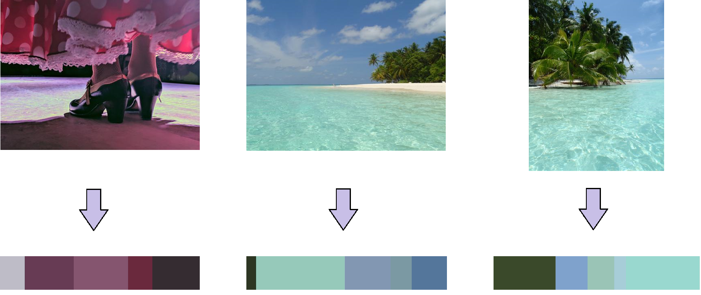
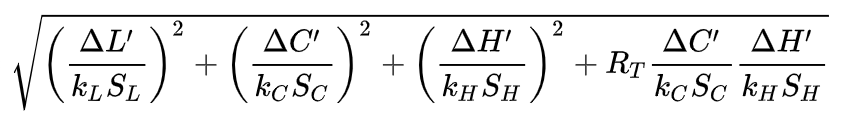
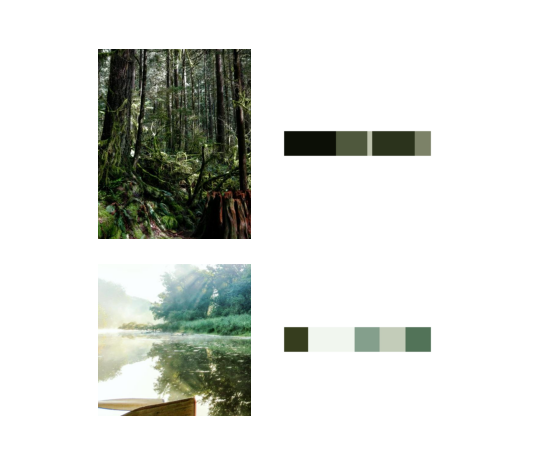
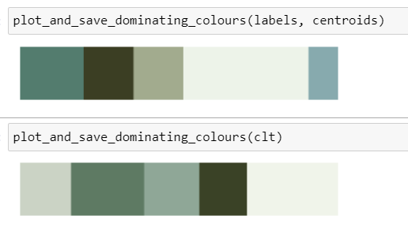

The goal of this project is to automatically create aesthetically looking sequences or groups of images. Having hundreds or thousands of photos, this is a tedious task when done by hand. In this project I set up a machine learning pipeline to do the work for me. Two of the essential ingredients for a pleasing combination of photos are content and colour. We use the information on those to find sets of images which combined are candy to the eye. The three major steps in the set up are:
- Get the content of an image via multiclass image classification.
- Get the dominating colours via clustering.
- Use these inputs to generate an appealing sequence of images.
 Remark: In addition to colour and content, also complexity and attention are important factors for aesthetics. The influence of those will be investigated in an upcoming project.
Remark: In addition to colour and content, also complexity and attention are important factors for aesthetics. The influence of those will be investigated in an upcoming project.
1. Extract the dominant colours with K-Medoids
The relevant information we want to extract here are the k dominant colours. This is done by clustering the pixels into k clusters as shown below for k=5.  K-Medoids is a clustering algorithm similar to K-Means, the difference being the cluster centers (centroids) not being at the geometric mean of the cluster but instead being the most central cluster data point itsself. Why do we not just use K-Means, which is the more common and performant algorithm? The answer has to do with how humans perceive similar colours vs how common colour spaces calculate similar colours. The most common colour spaces, e.g. RGB or BGR, are three-dimensional Euclidean spaces. K-Means for Euclidean spaces (or actually Euclidean metrics) works perfectly fine. It turns out though, the standard Euclidean colour space do not match human perception of colour distances. For this we have to switch to CIELAB space, a three dimensional space with colour coordinates a and b and lighting coordinate L. One of the improvements of CIELAB and its non-Euclidian metric compared to RGB is an improved illustration of lighting. It took decades to come up with a metric which is uniform, i.e. distances in that space are uniform compared to human perception of colour distance. The first version "CIE76" from 1976 was an Euclidean metric but lacked uniformity. The metric "CIEDE 2000" improved a lot in regards of perceptual uniformity. It is non-Euclidean and computations are slowed down quite a bit. The following formula shows the metric:  with ΔL' corresponding to the lighting L and ΔC' and ΔH' depending non-trivially on the coordinates a and b. The other factors are constants. Distances in this metric are computationally expensive. Furthermore KMeans requires the computation of the geometric mean, hence we have to switch to another clustering algorithm: KMedoids. The following cluster on the left which was computed uses K-Means illustrates the weakness of KMeans and RGB-space:  While the first two images are not completely far off, the last image is not matched well. When we do the same computation with K-Medoids (top) in non-Euclidean CIELAB space we see that the dominant colours are extracted more realistically compared to K-Means (bottom). 
2. Classify the content
The goal of the image classification is to gain information on the content of the image to control in which group of posts it appears. For instance a picture of a tropical beach next to a snowy mountain hut seems clashing, even if the colour scheme was harmonic. Considering the fact that most of my pictures are travel and outdoor pics, the image classification model will fit on the following classes: palmtrees, snow and neither of those. This is a first order approximation but sufficient for now. The data are cleanly separable as well, palmeras en la nieve have not been in the spotlight of my camera yet.
2.1 Image Data Collection
Taking my set of favourite pictures, only around 10% contain palmtrees and 5% fit the content "winter paradise". To avoid imbalanced training data, I scrape and clean the top palmtree images from my favourite photo sharing social media platform. Finding images which fit my definition of winter paradise was a bit less trivial and required more cleaning afterwards. The winter pictures I usually take are mountain or forest photos. Hence I scraped images with the hashtags snowboarding, backcountriskiing, winterwald and snowshoeing. The final dataset consisted of roughly 2000 images, 25% of which contained palmtrees, 25% in the winter wonderland category and the remaining 50% fell into neither class. The distributions of scraped and self-made photos are not fully identical but this is neglected in training and testing. After all, top posts with different style also influence the style of my future images.
2.2 Data Pre-processing
To have the algorithm focus more on the essential part, some images are cropped such that the desired object (usually the palmtree) is dominant in the image. Furthermore it turned out that a non-negligible part of scraped palmtree images contained white frames. Considering that the competing category was snow-dominated, those had to be cropped off.
2.3 Choose the best Model
A set of 2000 images with quite non-uniform content is too small to reach a great accuracy on a fresh model. The achieved accuracy on the validation set of a model with three convolutional layers was around 70-75%. Which is not totally bad but taking a pre-trained network will do better. Indeed, a pre-trained (on the imagenet dataset) MobileNetV2 reached an accuracy of around 90%. Misclassification between palmtree and winter wonderland images should be suppressed since its content clashes in general. Closer inspection showed that a misclassification between those two classes basically never happened. Misclassified images were mostly the ones were the object was only a minor part of the image. For our purposes, this is fine. The prediction of the neural network is written to the database.
3. Determine Aesthetics
Having the information on dominant colours and content category, we can now use these to automatically choose aesthetic image combinations. An aesthetic is dominated by colour likeness. To quantify colour similarity, two images get a score relative to eachother. This score is determined by the similarity threshold we choose. It corresponds to a certain distance in CIEDE2000-space. To gauge the significance of a certain threshold, we note that the human eye's sensitivity is around 2-3. Colours closer than this can't be separated by perception. For instance we can give a point for each colour closer than a similarity threshold 5 and another point if the colours are even closer than similarity threshold/2. Images can fit together colourwise but if their content clashes according to human perception, it'll feel like something is off. Hence we use the information on content to filter opposite content (for instance never allow palms and snow together).
3.1 Nearest Neighbours
To get the aesthetic companion of an image, we just need to find the images with the highest score in regards to this image.
3.2 Cluster similar colours with K-Means
Having a score for aesthetic, we can use this as input for the K-Means clustering algorithm and group images accordingly. Clustering is ideal for getting aesthetic pages in a photobook, the number of clusters could correspond to the number of pages. We can get a sequence of images by continuing each cluster with the next nearest cluster. The image below shows five random clusters with a similarity threshold of 5 while ignoring content.

Results
Some of the results are also shared on this Instagram profile while more details can be found on Github.